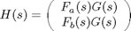
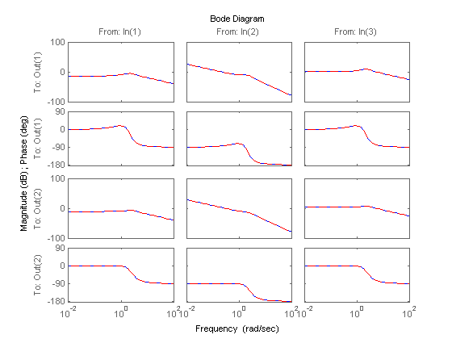

Preventing State Duplication in System Interconnections
This demo gives guidelines for building minimum-order models of LTI system interconnections.
Contents
Model Interconnections
You can connect LTI models using the operators +, *, [,], [;] and the commands series, parallel, feedback, lft, and connect. To prevent duplication of some of the dynamics and ensure that the resulting model has minimal order, it is important that you follow some simple rules:
- Convert all models to the state-space representation before connecting them
- Respect the block diagram structure
- Avoid closed-form expressions and LTI algebra.
As an illustration, this demo compares two ways to compute a state-space model for the following block diagram

where
G = [1 , tf(1,[1 0]) , 5]; Fa = tf([1 1] , [1 2 5]); Fb = tf([1 2] , [1 3 7]);
Recommended Method
The best way to connect these three blocks is to convert them to state space and treat the block diagram as a series connection of G with [Fa;Fb]:
H1 = [ss(Fa) ; Fb] * G;
To find the order of H1, type
order(H1)
ans =
5
The order 5 is minimal. Note that because SS has higher precedence than TF, it is enough to convert one of the blocks to state-space (the remaining conversions take place automatically).
Order-Inflating Method
Observe that the overall transfer function is

Therefore, you can also connect the three blocks and compute H by typing
H2 = ss([Fa * G ; Fb * G]);
Verify that the frequency responses of H1 and H2 match:
bode(H1,'b',H2,'r--')
While H2 is a valid model, its order is 14, almost three times higher than that of H1:
order(H2)
ans =
14
H2 has higher order because:
- G appears twice in this expression
- The dynamics of Fa and Fb get replicated three time when evaluating Fa*G and Fb*G
- The state-space conversion is performed on a 2x3 MIMO transfer matrix with four entries of order 2 and two entries of order 3, yielding a total order of 14.
Using a closed-form expression for the overall transfer function is a bad idea in general as it will typically inflate the order and introduce lots of cancelling pole/zero dynamics.
Conclusion
When connecting LTI models, avoid introducing duplicate dynamics by staying away from closed-form expressions, working with the state-space representation, and breaking block diagrams down to elementary series, parallel, and feedback connections. When in doubt, use the function connect which is guaranteed to produce minimal realizations of block diagrams.